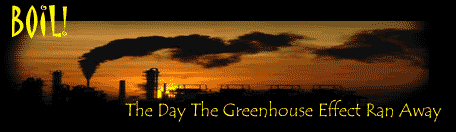
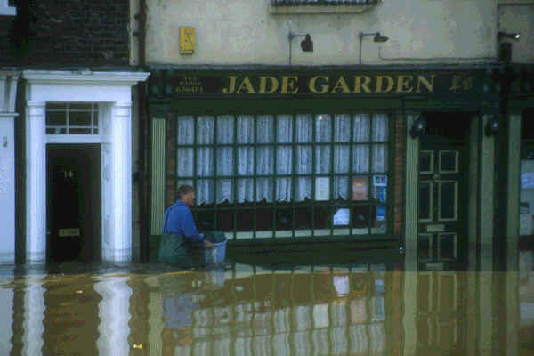
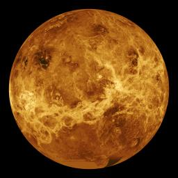
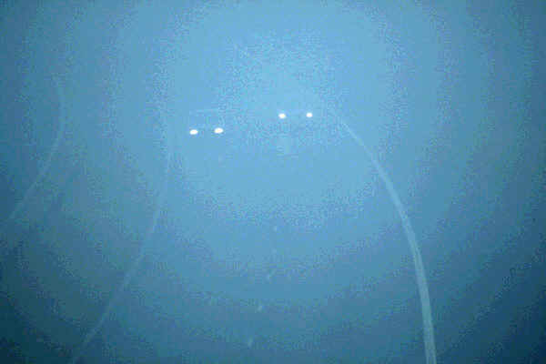

| WARNING: We get a lot of mail from readers who got very scared after reading the scenario outlined below. Please bear in mind the events described here are still hypothetical. And if you scare easy - perhaps you should consider NOT reading this. - the editor |

We’re in for a surprise. A few tens of years more, and our climate might suddenly go totally berserk. For starters, it would turn our planet into a lifeless, super hot oven, much like the planet Venus. Welcome to the ghastly phenomenon dubbed ‘the runaway greenhouse effect’. And the really scary part is: we might be heading straight towards it.
But then, suddenly, it all changes. From one month to the next, the climate of
the world goes wild. Temperatures jump. The ice caps of the poles crumble,
pushing the sea levels up. The snow caps on the mountain tops melt,
turning even the tiniest rivulet into a roaring body of water. Cities are
flooded, countries washed away. Tornadoes and hurricanes push across the
globe. Harvests fail. Economies crumble. Tropical
diseases like malaria and dengue push northwards. Forests turn into deserts.
And of course, millions of people perish during all the mayhem.
|  |
|
|
And if you thought that was bad: you haven’t seen
nothing yet. Within a few decades, the situation goes totally out of
hand. Temperatures just keep on rising, faster and faster. And as they do, more and more water on
Earth begins to evaporate. The sea level begins to drop again. If you’re one
of those poor souls who had his country or city flooded when the ice caps
melted, you might be glad to find the sea retreating.
But don’t put that flag out yet. What you’re witnessing, is the end of the
world. Nothing more, nothing less.
Here’s how it goes. As the temperatures rise, more water evaporates. But as
more water evaporates, our atmosphere gets thicker -- causing the temperatures
to rise even more. And as the temperatures rise even more, even more water
evaporates. And as even more water evaporates... You've got it: there’s a chain
reaction going on. The dreaded ‘runaway greenhouse effect’ has just kicked
in.
Governments and scientists will desperately look for a
way to turn the tide. But they won’t find one. There’s just no way
you can stop something as mighty as the Earth’s climate. Although our
politicians might still mumble some reassuring words to prevent a general
panic, deep within they will realize how bad the situation really is. A few
years more, and our planet will no longer be habitable. All life is about to
vanish from the planet formerly known as Earth. There is no escape, not even a
remote possibility things will improve.
The best evidence for that is hovering in the night sky: the planet
Venus. For many years, scientists wondered why Venus has an atmosphere so hot
that lead and tin actually melt in it. Only in the late 1990s they realized
that Venus too has undergone the runaway greenhouse effect. Its atmosphere is
so dense, incoming solar heat cannot escape from it.
Exactly that, my friends, is what is happening on our planet. Earth is about to join Venus.
We’re about to literally fry to death.
|  |
|
|
By
now, temperatures on Earth start getting really uncomfortable.
Everywhere you look, there’s this dense, watery fog -- it’s water vapor,
as you might have guessed. Where there used to be rivers, only dry gullies are
left, carving through the barren landscape. And where the oceans used to be,
only some lakes remain -- and they get smaller each day.
It’s hard to tell how exactly humanity will die in the end. Perhaps we
won’t be able to stand the heat anymore, and literally find ourselves cooked
to death by the ever increasing temperatures. Perhaps we’ll suffocate, as
our once fresh atmosphere turns into a dense brew of carbon dioxide, water
vapor and methane. Perhaps we’ll survive all that, clinging to our gas masks
and our airconditioning -- and in the end starve to death because all plants
and animals are gone.
One thing is absolutely certain, though: it will be some
gruesome, hellish end. After a few years or decades, our planet has
become a deserted fog planet, with an atmosphere so hot that lead and tin
actually melt in it. Life will be no longer possible -- except perhaps for a
handful of soil bacteria that are able to withstand all the nastiness.
The Runaway
Greenhouse: The facts
Of
course, we could have known what was coming. Ever since the 1990s, there were some climatologists
warning for it. But their calculations were laughed away,
ill understood by the general public or ignored by the politicians in charge
of things. The climatologists were dubbed pessimists. Even though their
computer models told otherwise.
As late as 2001, the UN’s
Intergovernmental Panel on Climate Change (IPCC) formally warned that the
greenhouse effect could ‘unleash catastrophic and irreversible changes to
key planetary processes that make the world habitable.’ In 2005, a British
government research council repeated the warning. And added the effect could
kick in as soon as 2015.
The runaway greenhouse effect works quite simple, really. First, you should
realize why we have an atmosphere in the first place. That’s because
there’s a lot of water vapor and carbon dioxide in the air. There’s
nothing wrong with that. The carbon dioxide and the water vapor serve as a
‘blanket’: they prevent some of the incoming heat from the sun from flying
off again into space.
|  |
At least, that’s how things went until one day, six billion humans came
around. Mankind literally pumps trillions of tons of greenhouse gases like
carbon dioxide and methane into the
atmosphere.
No big deal, so far. Calculations show that this massive amount of extra
greenhouse gas will only push up the Earth’s temperatures a few degrees.
Besides, about one quarter of all the methane and the carbon dioxide is
cleaned up by nature each year.
But around 2015, that could suddenly change. The
climate warming could pass a critical threshold. The ice
caps of the poles could melt. This would set free billions of tons of extra
carbon dioxide: the ice caps are full of tiny bubbles of trapped ancient air with a lot of carbon dioxide in
them. This suddenly gives an extra push to the greenhouse
effect.
Also, the warming could unleash carbon dioxide that is trapped in sea
sediments, in the permafrost of Greenland and in the soil. And worse: the warming could set free the
trillions of tons of methane that are stashed away below the ocean's floor and
in the permafrost.
At the same time, nature could get ‘saturated’ with carbon. Of course,
plants and soil organisms will still breathe carbon dioxide. But there will be
too much of it.
And in the end, the water vapor kicks in. While it gets hotter, oceans and
rivers start to evaporate. This would make the atmosphere denser and hotter,
pushing up the evaporation, making it hotter... And so on.
So: abandon all
hope?
To be honest, of all end of world scenarios outlined on this site, we at Exit
Mundi find the one with the runaway greenhouse effect particularly scary. Of
course, there’s the problem with meteors, and the risk of
robots taking over.
But the greenhouse effect is happening today, as we speak. It seems to be only
a matter of time before we can begin to melt that lead and tin.
On the other hand: climate is a difficult beast. If we’ve learned one thing
over the past few decades, it is that no one can really predict how the
climate will change on us. For example: there’s a good chance the greenhouse
effect unleashes not a runaway chain reaction -- but an ice age, as reported
elsewhere on this site.
Also, Earth survived intense heat before. 50 Million years ago, the North Pole
had no ice, but a subtropical climate. And before that, in the era of the
dinosaurs, CO2-levels were about four to six times higher than today. Back
then, sea temperature was up to 40 degrees Celsius, and many continents were
flooded. It was really a greenhouse world - and it didn't went out of hand.
On the other hand, even if there's a remote possibility
it DOES go out of hand, there’s plenty of need to worry.
We don’t know about you, but we at Exit Mundi prefer neither the ice age,
nor the super hot Venus-like atmosphere. We like things the way they are.
So if you read this and you happen to be one of those top dogs in charge of
things: hey, it’s only one atmosphere we have here, PLEASE be a little
careful with it!